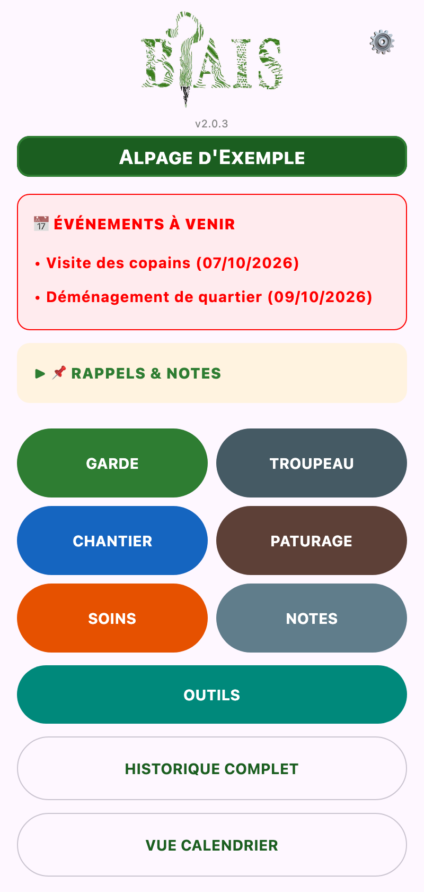
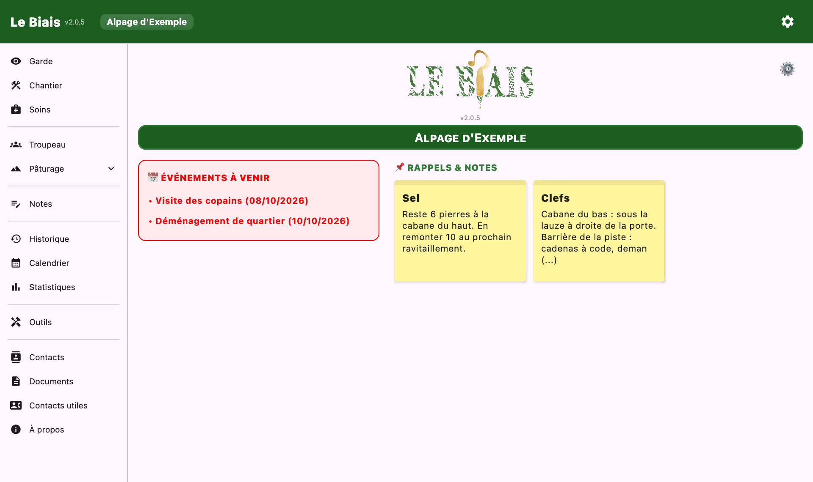

Documentation
Documentation
Créer ou rejoindre un projet, déclarer ses marques, et se repérer sur l'écran d'accueil.
Tout ce que vous saisissez est rangé dans un projet : une estive, une colline, une plaine… Un même appareil peut porter plusieurs projets et passer de l'un à l'autre depuis les paramètres.
Au premier lancement, l'écran Bienvenue sur Le Biais demande votre nom (ou pseudo), puis propose deux chemins :
lebiais://… reçu de votre binôme, ou vous touchez Scanner le code QR. Le nom du projet, ses espèces et ses marques arrivent alors des autres appareils.Votre nom sert à signer vos saisies : c'est lui qui distingue vos heures et vos repos de ceux de votre binôme dans les statistiques.
À la création d'un projet, deux écrans s'enchaînent :
Les marques se complètent ou se corrigent à tout moment depuis Troupeau.
L'accueil rassemble ce qui compte aujourd'hui, puis donne accès à tout le reste.
| Bouton | Ce qu'on y fait |
|---|---|
| GARDE | Pointer une journée de garde : horaires, événements, quartiers, météo, parcours. |
| TROUPEAU | Effectifs, marques, arrivées, départs, décès, comptages, naissances, chiens. |
| CHANTIER | Compter les heures hors garde : soins, parcs, filets, aménagements. |
| PATURAGE | Quartiers, équipements, ressources et carte. |
| SOINS | Saisir un soin, suivre les rappels, tenir la pharmacie et le carnet. |
| NOTES | Bloc-notes et listes à cocher, triés par tags. |
| OUTILS | Compteur, odomètre, bêtes remarquables. |
| HISTORIQUE COMPLET | Tout ce qui a été saisi, filtrable. |
| VUE CALENDRIER | La saison jour par jour, les repos, les rendez-vous. |
| STATISTIQUES | Repos, heures, soins, quartiers, et l'export PDF. |
| FICHE CONTACTS | L'annuaire du projet. |
| DOCUMENTS | Contrats, fiches de paie, constats… |
| CONTACTS UTILES & INFOS BERGER.ES | Associations, syndicat, ligne d'écoute, groupes Signal. |
| À PROPOS | Origines, données, mentions légales, signaler un bug ou une idée. |

L'application tourne sur téléphone Android, et existe aussi en version poste de bureau (macOS, Windows, Linux) pour reprendre ses données au chaud. Sur un grand écran, les pages se déplient en volets : la liste à gauche, la fiche à droite, un menu latéral à la place des boutons de l'accueil. Les fonctions sont les mêmes ; cette documentation signale par Android seul ce qui n'existe que sur téléphone.
